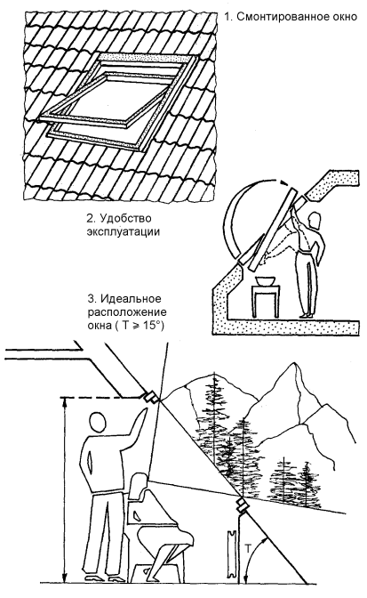
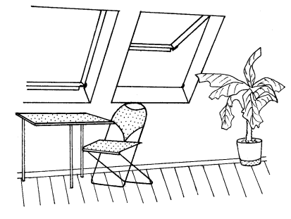
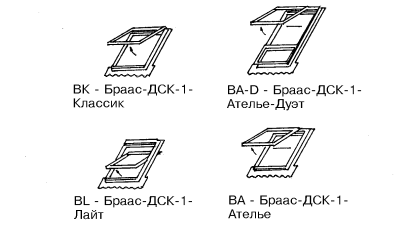

Мансардные окна.

Эти окна способствуют более эффективному использованию внутреннего пространства мансарды.
Мансардные окна фирмы «VELUX» (рис. 16)более знакомы российскому потребителю. В качестве материала для изготовления окон используется высококачественная древесина, пропитанная антисептиком. Наружную поверхность окон защищают водонепроницаемые накладки из алюминия, окрашенного в серо-коричневый цвет. Замок расположен на высоте, недостижимой для маленьких детей.
Внимание
Существуют типы окон, имеющие вентиляционный клапан наверху по всей ширине окна. Вентиляционная прорезь может открываться, когда окно заперто.
Специальные шарниры расположены в середине рамы, и она может поворачиваться на 180°. Все мансардные окна выпускаются со стеклопакетами с качественным прозрачным двойным остеклением. Система окладов «VELUX» обеспечивает непроницаемую герметичную установку в любую крышу со скатом 15° и больше. Разработаны разные типы окладов, в зависимости от кровельного покрытия: для черепицы и волнистых листов, для плоских кровельных материалов.
Также существуют комбинированные оклады для группы окон. Фирма «VELUX» обеспечивает выпуск различных вспомогательных принадлежностей для своих окон. Это шторы из качественного х/б полотна разных цветов, белые жалюзи, которые крепятся по бокам окна на специальных рельсах, маркизеты из ПВХ, а также специальные стержни длиной 80 и 120 см, которые используются для открывания высоко расположенных окон.
Испытания показали, что мансардное окно «VELUX», которое выходит на небо, дает на 30–40 % больше света, чем слуховое окно того же самого размера.

Рис. 16. Мансардные окна «VELUX»
Технология применения.Конструкция мансардных окон «VELUX» такова, что ручка для открывания расположена в верхней части рамы, что дает много преимуществ. Можно устанавливать окна в низком положении и иметь хороший обзор из окна как сидя, так и стоя. Это также облегчает открывание окна, если под ним размещена мебель.
В большинстве случаев идеальным расположением окна является 185–205 см от пола до ручки для открывания. Уклон крыши при этом может быть 15° и больше (рис. 16).
Окна «БРААС-ДСК-1» (рис. 17)предназначены для мансардных и чердачных помещений и изготавливаются из легко поддающихся разборке рам из искусственных материалов или из полностью обработанного монолитного дерева с бесцветным глазурным покрытием.
Своим современным дизайном и высокой функциональностью окна фирмы «БРААС-ДСК-1» являются оригинальным решением освещения и комфортабельного обустройства чердачных помещений. Они дают не только возможность освещения значительных площадей, но их светлые, изящные оконные профили обеспечены удобной системой маневрирования при помощи удобно расположенной внизу длинной ручки.
Мансардные окна «БРААС-ДСК-1» поставляются с интегрированными в конструкцию стыкующими элементами и поэтому при монтаже не требуют много времени и больших расходов. Окна «БРААС-ДСК-1» оснащены оригинальными энергосберегающими стеклами, что также приводит к значительной экономии средств.


Рис. 17. Окна «Браас-ДСК-1» (BRAAS)
Особым комфортом отличаются окна «БРААС-ДСК-1-Ателье». Своеобразная система подъема и задвижки окна обеспечивает не только комфорт и высокий уровень освещенности, но и максимальный поток света и воздуха, а также обзор во весь рост через открытое окно. Ни одно другое окно не имеет такой возможности открываться вверх и одновременно сдвигаться в сторону – влево или вправо. Эта конструкция окна позволяет без труда принимать солнечные ванны. При варианте «Ателье-Дуэт» под окном встраивается дополнительная, жестко закрепленная фрамуга, с целью еще более полного обзора.
Неподвижная и подвижная части оконного блока выполнены из коэкструдированных профилей из акрилового ПВХ в сборе с внутренними металлическими элементами для повышения жесткости, что общей конструкции придает повышенную устойчивость к влажности, климатическим воздействиям и делает ее удобной при очистке. Благодаря желобку для сбора конденсата, данный тип окон идеален для помещений с повышенной влажностью как, например, ванная или кухня.
Подъемно-качающиеся окна «Классик» также соответствуют самым высоким требованиям к функциональному конструкторскому решению и дизайну. Фрамуга окна открывается не во внутрь комнаты, что позволяет свободно подойти к открытому окну.
Качающееся окно «БРААС-ДСК-1-Лайт» идеально подходит там, где нет особой необходимости подходить к окну (высоко встроенное окно лестничной клетки). При необходимости это окно легко переоснащается в систему подъемно-качающихся окон.
Рамы окон «БРААС-ДСК-1-Лайт» и «БРААС-ДСК-1-Классик» сделаны из деревянного монолита (северная сосна), покрыты бесцветной глазурью, позволяющей просматривать текстуру древесины.